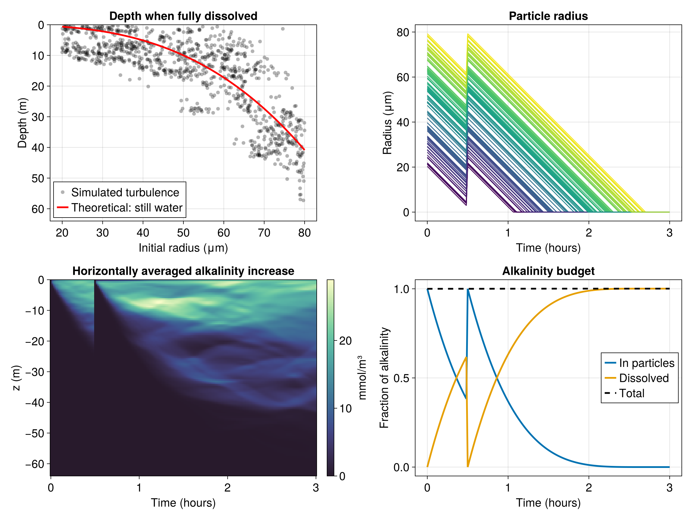

Sinking and dissolving particles in two-dimensional turbulence
This example demonstrates how to use DissolvingParticles. This is a simple model of the dissolution of hydrated lime (calcium hydroxide, Ca(OH)₂) are released at the surface of a two-dimensional turbulent flow. Each particle sinks and dissolves, releasing alkalinity into the water as it dissolves. The dissolution rate and the sinking speed are functions of the particle radius.
This example demonstrates:
- How to set up
DissolvingParticlesand couple them to a carbonate system - How to set up sinking and dissolution rates as functions of particle radius
- How to check that alkalinity is conserved between the particles and the water
Install dependencies
First we check we have the dependencies installed
using Pkg
pkg "add OceanBioME, Oceananigans, CairoMakie, JLD2"Model setup
First load the required packages
using OceanBioME, Oceananigans, Printf, Random, Statistics
using Oceananigans.Units
Random.seed!(1234) # Set the random seed for reproducibilityGrid
We use a two-dimensional (x-z) domain which is 64 m wide and periodic in x, and 64 m deep
grid = RectilinearGrid(size = (128, 128), x = (0, 64), z = (-64, 0),
topology = (Periodic, Flat, Bounded))128×1×128 RectilinearGrid{Float64, Periodic, Flat, Bounded} on CPU with 3×0×3 halo
├── Periodic x ∈ [0.0, 64.0) regularly spaced with Δx=0.5
├── Flat y
└── Bounded z ∈ [-64.0, 0.0] regularly spaced with Δz=0.5Particles
Each particle is a sphere of radius $r$, and DissolvingParticles needs two functions of that radius: the dissolution_rate, $k(r)$, which is how fast the radius shrinks ($dr/dt = -k(r)$), and the sinking_speed, $w(r)$, which is how fast the particle sinks relative to the water. Either can be a constant number or a function.
Here, we set the dissolution rate so that the mass loss from the particles is proportional to the surface area of the particles. This leads to a constant decrease in the particle radius, $dr/dt = -k$. Here, set $k = 10^{-8}$ m/s, so a particle with initial radius $r_0$ in meters lasts $r_0 / k$ seconds. A different dependence on radius only needs a different function here, for example dissolution_rate(r) = 5e-13 / r for dissolution limited by diffusion away from the particle surface.
The dissolution rate can also depend on model fields at the particle position (tracers, velocities, or auxiliary fields). To do this, list the fields in required_fields in mineral_parameters below, and they are passed after the radius, e.g. with required_fields = (:T, ) we would write dissolution_rate(r, T) = ....
dissolution_rate(r) = 1e-8 # m/sdissolution_rate (generic function with 1 method)The particles sink at the Stokes' law speed for their size, $w = 2(\rho_p - \rho)gr^2/9\mu$, so as the particles dissolve they also sink more slowly.
const ρₚ = 2211 # kg/m³, density of calcium hydroxide
const ρ = 1025 # kg/m³, density of seawater
const μ = 1.08e-3 # kg/m/s, dynamic viscosity of seawater
const g = 9.81 # m/s², gravitational acceleration
sinking_speed(r) = 2 * (ρₚ - ρ) * g * r^2 / (9μ) # m/s, positive downwardssinking_speed (generic function with 1 method)sinking_speed is also passed the values of any required_fields, e.g. sinking_speed(r, T) = .... Alternatively, the default StokesSinking can take a water density which depends on the required fields, e.g. StokesSinking(particle_density = ρₚ, water_density = (T, S) -> ...).
The other DissolvingMineral parameters (molar_mass and released_tracers) are left at their defaults, which are for calcium hydroxide. It releases 2 moles of alkalinity per mole dissolved.
We also pass the particle density. It does not change how the particles sink, since that is set by sinking_speed above, or how fast their radius shrinks, which is set by dissolution_rate. Instead it sets how much alkalinity is released as the particles dissolve. The particles lose volume at $4\pi r^2 k(r)$, and the density converts that volume into moles of mineral through the molar volume, $V_m = M / \rho_p$ (molar_mass / density). A denser mineral has more moles in each cubic metre, so it releases more alkalinity for the same change in radius. If sinking_speed were left at its default (by omitting it from mineralparameters), the density would also set the Stokes' law sinking speed. We use the same ``\rhop`` as in the sinking speed so that the two are consistent. The density is also used below to calculate the mass of each particle.
mineral_parameters = (; density = ρₚ, dissolution_rate, sinking_speed)(density = 2211, dissolution_rate = Main.var"##142".dissolution_rate, sinking_speed = Main.var"##142".sinking_speed)We release 1000 particles with radii between 20 and 80 μm, in a 16 m wide patch at the surface.
n = 1000
r₀ = 20e-6 .+ 60e-6 * rand(n) # Set the initial radius of the particles
x₀ = 24 .+ 16 * rand(n) # Set the initial x position of the particles
z₀ = - rand(n) # Set the initial z position of the particles
particles = DissolvingParticles(n; grid, mineral_parameters) # Create the particles1000 BiogeochemicalParticles with DissolvingMineral{Float64} biogeochemistry:
├── fields: (:r,)
└── coupled tracers: (:Alk,)
Each computational particle stands for many real particles. The number of real particles represented by each computational particle is set by scalefactor. Here we release 1 kg of lime per metre in the (flat) y direction, and the scale factor is the same for each computational particle.
mineral = particles.biogeochemistry # Get the mineral parameters
scalefactor = 1 / sum(mineral.density * 4/3 * π * r₀.^3) # 1 kg divided by the total particle mass
set!(particles, r = r₀, x = x₀, z = z₀, scalefactors = fill(scalefactor, n))
particles # Output the particle properties1000 BiogeochemicalParticles with DissolvingMineral{Float64} biogeochemistry:
├── fields: (:r,)
└── coupled tracers: (:Alk,)
We couple the particles to a carbonate system with dissolved inorganic carbon (DIC) and alkalinity (Alk) without any biology
biogeochemistry = NutrientsPlanktonDetritus(grid; inorganic_carbon = CarbonateSystem(), particles)
model = NonhydrostaticModel(grid; biogeochemistry, advection = WENO(order = 5))NonhydrostaticModel{CPU, RectilinearGrid}(time = 0 seconds, iteration = 0)
├── grid: 128×1×128 RectilinearGrid{Float64, Periodic, Flat, Bounded} on CPU with 3×0×3 halo
├── timestepper: RungeKutta3TimeStepper
├── advection scheme:
│ ├── momentum: WENO{3, Float64, Oceananigans.Utils.BackendOptimizedDivision}(order=5)
│ ├── DIC: WENO{3, Float64, Oceananigans.Utils.BackendOptimizedDivision}(order=5)
│ └── Alk: WENO{3, Float64, Oceananigans.Utils.BackendOptimizedDivision}(order=5)
├── tracers: (DIC, Alk)
├── closure: Nothing
├── buoyancy: Nothing
└── coriolis: NothingSet the initial conditions
Alk₀ = 2300 # mmol/m³, initial alkalinity
u_ic(x, z) = 0.02 * randn() # m/s
w_ic(x, z) = 0.02 * randn() # m/s
set!(model, u = u_ic, w = w_ic, DIC = 2000, Alk = Alk₀)Run the simulation for 3 hours, long enough for the largest particles to dissolve, saving the particles and alkalinity field every minutes
simulation = Simulation(model, Δt = 1, stop_time = 3hours)
conjure_time_step_wizard!(simulation, cfl = 0.5, max_Δt = 10)
progress_message(sim) = @printf("Iteration: %04d, time: %s, Δt: %s, wall time: %s\n",
iteration(sim), prettytime(sim), prettytime(sim.Δt),
prettytime(sim.run_wall_time))
add_callback!(simulation, progress_message, TimeInterval(15minutes))After 30 minutes, put the particles, DIC, and alkalinity back to their initial values.
function reset_particles_and_tracers!(sim)
set!(particles, r = r₀, x = x₀, z = z₀, scalefactors = fill(scalefactor, n))
set!(sim.model, DIC = 2000, Alk = Alk₀, enforce_incompressibility = false)
return nothing
end
add_callback!(simulation, reset_particles_and_tracers!, SpecifiedTimes(30minutes))Save output
filename = "dissolving_particles"
simulation.output_writers[:fields] = JLD2Writer(model, (; Alk = model.tracers.Alk),
filename = "$filename.jld2",
schedule = TimeInterval(1minute),
overwrite_files = true)JLD2Writer scheduled on TimeInterval(1 minute):
├── filepath: dissolving_particles.jld2
├── 1 outputs: Alk
├── array_type: Array{Float32}
├── including: [:coriolis, :buoyancy, :closure]
├── file_splitting: NoFileSplitting
└── file size: 0 bytes (file not yet created)Save the particle positions as well as their radii
particle_state(model) = (; x = Array(particles.x), z = Array(particles.z), r = Array(particles.fields.r))
simulation.output_writers[:particles] = JLD2Writer(model, (; particles = particle_state),
filename = "$(filename)_particles.jld2",
schedule = TimeInterval(1minute),
overwrite_files = true)JLD2Writer scheduled on TimeInterval(1 minute):
├── filepath: dissolving_particles_particles.jld2
├── 1 outputs: particles
├── array_type: Array{Float32}
├── including: [:coriolis, :buoyancy, :closure]
├── file_splitting: NoFileSplitting
└── file size: 0 bytes (file not yet created)Run!
run!(simulation)[ Info: Initializing simulation...
Iteration: 0000, time: 0 seconds, Δt: 1.100 seconds, wall time: 0 seconds
[ Info: ... simulation initialization complete (11.071 seconds)
[ Info: Executing initial time step...
[ Info: ... initial time step complete (1.335 seconds).
Iteration: 0238, time: 15 minutes, Δt: 9.850 seconds, wall time: 13.734 seconds
Iteration: 0329, time: 30 minutes, Δt: 10 seconds, wall time: 14.233 seconds
Iteration: 0419, time: 45 minutes, Δt: 10 seconds, wall time: 14.726 seconds
Iteration: 0509, time: 1 hour, Δt: 10 seconds, wall time: 15.265 seconds
Iteration: 0599, time: 1.250 hours, Δt: 10 seconds, wall time: 15.788 seconds
Iteration: 0689, time: 1.500 hours, Δt: 10 seconds, wall time: 16.318 seconds
Iteration: 0779, time: 1.750 hours, Δt: 10 seconds, wall time: 16.828 seconds
Iteration: 0869, time: 2 hours, Δt: 10 seconds, wall time: 17.353 seconds
Iteration: 0959, time: 2.250 hours, Δt: 10 seconds, wall time: 17.877 seconds
Iteration: 1049, time: 2.500 hours, Δt: 10 seconds, wall time: 18.396 seconds
Iteration: 1139, time: 2.750 hours, Δt: 10 seconds, wall time: 18.913 seconds
[ Info: Simulation is stopping after running for 19.450 seconds.
[ Info: Simulation time 3 hours equals or exceeds stop time 3 hours.
Iteration: 1229, time: 3 hours, Δt: 10 seconds, wall time: 19.450 seconds
Results
First we load the alkalinity and particle output
Alk = FieldTimeSeries("$filename.jld2", "Alk")
times = Alk.times
xc, _, zc = nodes(Alk)
using JLD2
file = jldopen("$(filename)_particles.jld2")
iterations = keys(file["timeseries/t"])
x, z, r = ntuple(_ -> zeros(n, length(iterations)), 3)
for (i, iter) in enumerate(iterations)
x[:, i] = file["timeseries/particles/$iter"].x
z[:, i] = file["timeseries/particles/$iter"].z
r[:, i] = file["timeseries/particles/$iter"].r
end
close(file)We can now make an animation of the particles sinking and dissolving through the turbulence. The particles are shown at their current size (magnified), and disappear when they have dissolved
using CairoMakie
frame = Observable(1)
Alkₙ = @lift interior(Alk[$frame], :, 1, :) .- Alk₀
remaining = @lift r[:, $frame] .> 0
xₙ = @lift x[$remaining, $frame]
zₙ = @lift z[$remaining, $frame]
rₙ = @lift r[$remaining, $frame]
sizeₙ = @lift 2e5 * $rₙ
fig = Figure(size = (700, 600), fontsize = 20)
title = @lift "t = " * prettytime(times[$frame])
Label(fig[0, 1:2], title)
ax = Axis(fig[1, 1]; title = "Alkalinity increase and particles", xlabel = "x (m)", ylabel = "z (m)",
aspect = DataAspect(), limits = ((0, 64), (-64, 0)))
hm = heatmap!(ax, xc, zc, Alkₙ, colormap = Reverse(:deep), colorrange = (0, 80), interpolate = true)
scatter!(ax, xₙ, zₙ; markersize = sizeₙ, color = :white)
Colorbar(fig[1, 2], hm, label = "Alkalinity increase (mmol/m³)")Colorbar()start the movie after the spinup period has ended
run_frames = findall(times .>= 30minutes)
record(fig, "$filename.mp4", run_frames, framerate = 12) do i
frame[] = i
endThe large particles sink out of the eddies, while the small particles dissolve near the surface and are stirred around by the flow.
To see this more clearly, we can compare how deep each particle had sunk when it finished dissolving with how deep it would sink in still water. In still water a particle released at the surface sinks $\int_0^{r_0/k} w(r_0 - kt)\,dt = 2(\rho_p - \rho)g r_0^3/27\mu k$ before it dissolves.
dissolved_index = [findfirst(r[p, :] .== 0) for p in 1:n]
dissolution_depth = [-z[p, dissolved_index[p]] for p in 1:n]
still_water_depth(r₀) = sinking_speed(r₀) * r₀ / 3dissolution_rate(r₀)still_water_depth (generic function with 1 method)We can also look at the horizontally averaged alkalinity increase, and check that the alkalinity released into the water is the same as the alkalinity lost from the particles.
alkalinity_released = [Field(Integral(Alk[i] - Alk₀))[1, 1, 1] for i in 1:length(times)]
molar_volume = mineral.molar_mass / mineral.density # m³/mol
ν = mineral.released_tracers.Alk # mol Alk per mol Ca(OH)₂
alkalinity_in_particles = [sum(@. scalefactor * 4/3 * π * r[:, i]^3 / molar_volume * ν * 1000) for i in 1:length(times)]
total_alkalinity = alkalinity_in_particles[1]
@info @sprintf("Alkalinity conservation error: %.2e (relative)",
(alkalinity_released[end] + alkalinity_in_particles[end] - total_alkalinity) / total_alkalinity)
mean_alkalinity_increase = [mean(interior(Alk[i]) .- Alk₀, dims = 1)[1, 1, :] for i in 1:length(times)]
fig = Figure(size = (1200, 900), fontsize = 20)
ax1 = Axis(fig[1, 1], xlabel = "Initial radius (μm)", ylabel = "Depth (m)", yreversed = true,
title = "Depth when fully dissolved", limits = (nothing, (0, 64)))
radii = (20:80) * 1e-6
scatter!(ax1, r₀ * 1e6, dissolution_depth, color = (:black, 0.3), label = "Simulated turbulence")
lines!(ax1, radii * 1e6, still_water_depth.(radii), color = :red, linewidth = 3, label = "Theoretical: still water")
axislegend(ax1, position = :lb)
ax2 = Axis(fig[1, 3], xlabel = "Time (hours)", ylabel = "Radius (μm)", title = "Particle radius")
for p in 1:10:n
lines!(ax2, times / hour, r[p, :] * 1e6, color = r₀[p], colormap = :viridis, colorrange = (20e-6, 80e-6))
end
ax3 = Axis(fig[2, 1], xlabel = "Time (hours)", ylabel = "z (m)", title = "Horizontally averaged alkalinity increase")
hm = heatmap!(ax3, times / hour, zc, stack(mean_alkalinity_increase)', colormap = Reverse(:deep))
Colorbar(fig[2, 2], hm, label = "mmol/m³")
ax4 = Axis(fig[2, 3], xlabel = "Time (hours)", ylabel = "Fraction of alkalinity", title = "Alkalinity budget")
lines!(ax4, times / hour, alkalinity_in_particles / total_alkalinity, linewidth = 3, label = "In particles")
lines!(ax4, times / hour, alkalinity_released / total_alkalinity, linewidth = 3, label = "Dissolved")
lines!(ax4, times / hour, (alkalinity_in_particles .+ alkalinity_released) / total_alkalinity,
linewidth = 3, linestyle = :dash, color = :black, label = "Total")
axislegend(ax4, position = :rc)
save("dissolving_particles.png", fig)[ Info: Alkalinity conservation error: 8.89e-04 (relative)

This page was generated using Literate.jl.